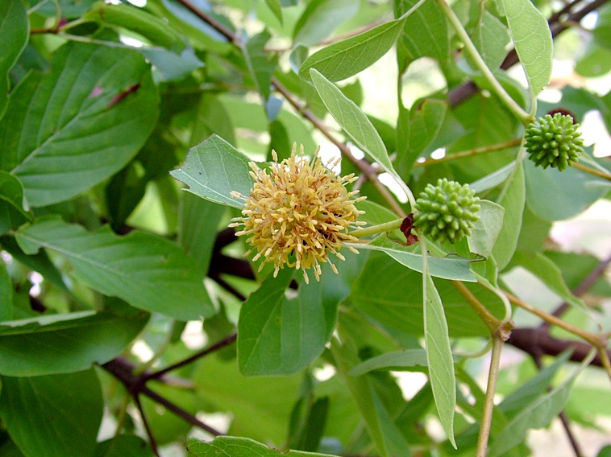
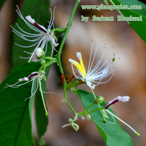

เร่วน้อย ผลค่อนข้างกลม ลักษณะเป็น 3 พู ขนาดเส้นผ่านศูนย์กลางประมาณ 1.0-1.5 เซนติเมตร ยาวประมาณ 1.5-2 เซนติเมตร มีขน ผลแก่สีน้ำตาลแดง มีเมล็ดจำนวนมากจับกันเป็นกลุ่มก้อนกลม หรือกลมรี มี 3 พู แต่ละพูมีเมล็ด 3-15 เมล็ด อยู่เรียงแน่น 3-4 แถว
เมล็ดรูปร่างไม่แน่นอน มีหลายเหลี่ยมและเป็นสันนูน กว้าง 2-3 มม. ยาว 2.5-4 มม. สีน้ำตาลเข้มหรือสีน้ำตาลดำ ผิวนอกเรียบมีเยื่อบางหุ้ม ปลายแหลมของเมล็ดมีรูเห็นเด่นชัด เมล็ดแข็ง เนื้อในเมล็ดสีขาวอมเหลือง กลิ่นหอมฉุน รสเผ็ดซ่าและขมเล็กน้อย เร่วใหญ่ ผลเรียวยาวหรือขอบขนานแกมสามเหลี่ยม ขนาดเส้นผ่านศูนย์กลางประมาณ 2 ซม. มีขนอ่อนสีน้ำตาลแดงปกคลุม ภายในมีเมล็ดเป็นกลุ่ม 10-20 เมล็ด ลักษณะเหมือนเร่วน้อย ผลมีรสมันเฝื่อนติดเปรี้ยว เมล็ด รสร้อนเผ็ดปร่า
ชื่อสมุนไพร : หัวห้อยรู
ชื่อสามัญ : Ant plant
ชื่ออื่นๆ : ปุ่มฟ้า, ปมเป้า, ปุ่มเป้า, ปุมเป้า หัวร้อยรู (ตราด), กระเช้าผีมด (สุราษฎร์ธานี), ร้อยรู (ปัตตานี), กาฝากหัวเสือ (นราธิวาส), ดาลูบูตาลิมา, ดาลูปูตาลิมา (มลายู-ภาคใต้), หัวร้อยรู (ภาคกลาง), ป่าช้าผีมด (ภาคตะวันออกเฉียงเหนือ)
ลักษณะของหัวร้อยรู
หัวร้อยรู หรือ ว่านหัวร้อยรู จัดเป็นพืชจำพวกหัว เป็นไม้ที่อิงอาศัยเกาะอยู่ตามต้นไม้อื่น หรือเรียกว่าไม้กาฝาก ลำต้นสูง 30-60 เซนติเมตร โคนต้นขยายใหญ่เป็นรูปกลมป้อมหรือเป็นพู มีลำต้นอวบน้ำ ที่โคนต้นโป่งพอง ต้นแก่จะมีหัวกลมโตขนาดเท่าลูกมะพร้าวห้าว
ภายในหัวจะเป็นรูย้อนขึ้นและย้อนลง พรุนไปทั่วหัว เมื่อผ่าออกดูมักจะมีมดดำอาศัยอยู่ภายในหัว เนื้อนิ่ม มีสีน้ำตาลไหม้ หัวมีรสเมา หัวร้อยรูมักขึ้นตามคาคบไม้ ขยายพันธุ์ด้วยวิธีการใช้เมล็ดและวิธีการแยกกอ สามารถเจริญเติบโตได้ดีในดินร่วน เป็นพืชที่ชอบความชื้นมากและแสงแดดปานกลาง มักขึ้นในป่าดงดิบทั่วไป ในประเทศไทยหัวร้อยรูมีเขตการกระจายพันธุ์อยู่ทั่วทุกภาค สำหรับในต่างประเทศที่พบก็ได้แก่ ประเทศพม่า มาเลเซีย อินโดนีเซีย และอินโดจีน

ชื่อสมุนไพร : กระทุ่มนา
ชื่ออื่นๆ : กระทุ่มดง (กาญจนบุรี) กระทุ่มนา กระทุ่มน้ำ (กลาง) กาตูม (เขมร-ปราจีนบุรี) ตำ (เขมร-สุรินทร์) ตุ้มแซะ ตุ้มน้อย ตุ้มน้ำ (เหนือ) ถ่มพาย (เลย) ท่อมขี้หมู (สงขลา) ท่อมนา (สุราษฎร์ธานี) โทมน้อย (เพชรบูรณ์) กระท่อมขี้หมู
ชื่อวิทยาศาสตร์ : Mitragyna diversifolia Wall. Ex. G. Don.
ชื่อวงศ์ : RUBIACEAE
ลักษณะกระทุ่มนาของ
เป็นไม้ยืนต้นขนาดกลาง - ใหญ่ ทรงพุ่มกลมคล้ายเห็ดใกล้บาน แตกกิ่งก้านมากตั้งแต่โคนต้น

ชื่อสมุนไพร : ขันทองพยาบาท
ชื่ออื่นๆ : ดูกใส (อีสาน) ยางปลอก ยายปลวก ฮ่อสะพานควาย (แพร่ น่าน) ขันทองพยาบาท (ภาคกลาง) ดูกหิน (สระบุรี) ข้าวตาก (กาญจนบุรี) มะดูกเลื่อม (เหนือ) ขันทอง (พิษณุโลก) ขุนทอง (ประจวบคีรีขันธ์) กระดูก (ใต้) ป่าช้าหมอง ดูกไทร ขอบนางนั่ง สลอดน้ำ มะดูกดง ข้าวตาก ขนุนดง เจิง
ชื่อวิทยาศาสตร์ : Suregada multiflora (A.Juss) Baill.
ชื่อพ้อง : Gelonium affine S.Moore, G. bifarium Roxb. ex Willd., G. fascuculatum Roxb., G. multiflorum A.Juss., G. obtusum Miq., G. oxyphyllum Miq., G. sumatranum S.Moore, G. tenuifolium Ridl., Suregada affinis (S.Moore) Croizat, S. bifaria (Roxb. ex Willd.) Baill, S. glabra Roxb., S. oxyphylla (Miq.) Kuntze, S. sumatrana (S.Moore) Croizat, S. tenuifolia
ชื่อวงศ์ : Euphorbiaceae
ลักษณะของขันทองพยาบาท
ไม้ยืนต้นขนาดกลาง สูง 7-13 เมตร ทรงพุ่มแน่นทึบ ลำต้นตรง กิ่งก้านอ่อน กิ่งห้อยลง กิ่งมีขนรูปดาว เปลือกต้นสีน้ำตาลแก่ ผิวบางเรียบ เนื้อไม้สีขาว ใบ เป็นใบเดี่ยว เรียงสลับ รูปขอบขนานแกมรูปหอก กว้าง 3-8 เซนติเมตร ยาว 9-22 เซนติเมตร เนื้อใบหนาทึบ เหนียว หลังใบเรียบลื่นเป็นมัน ท้องใบเรียบสีอ่อนกว่า ฐานใบรูปหัวใจ ปลายใบเป็นติ่งยาว ขอบใบจักฟันเลื่อย ไม่มีขน มีต่อมใสๆ
ขนาดเล็ก เส้นใบข้าง 5-9 คู่ ก้านใบยาว 2- 5 มิลลิเมตร ผิวใบด้านล่างมีต่อมสีเหลือง และมีขนรูปดาว หูใบขนาด 2 มม. แต่ละคู่เชื่อมกัน หลุดร่วงง่าย แต่ทิ้งแผลเป็นวงไว้ ดอกสีเขียวอมเหลืองอ่อน ออกเป็นช่อสั้นๆ ตรงซอกใบ ขนาด 0.8-1 ซม. กลิ่นหอม ช่อละ 5-10 ดอก อยู่ตรงกันข้ามกับใบ มีใบประดับยาว 1 มม. กว้าง 0.7-0.8 มม. รูปหอก ตรงปลายแหลม ดอกแยกเพศ แยกต้น ไม่มีกลีบดอก ดอกเพศผู้ ขนาด 2.5 มิลลิเมตร เกสรเพศผู้ 35-60 อัน แต่ละอันมีต่อมที่ฐาน
อาจพบเกสรตัวผู้ที่เป็นหมันปะปนอยู่ด้วย ฐานรองดอกนูนพองออก ดอกเพศเมีย ลักษณะเหมือนดอกเพศผู้ รังไข่เหนือวงกลีบ มีขนหนาแน่น รังไข่มี 3 ช่อง ก้านเกสรตัวเมีย 3 อัน ปลายแยก รังไข่มีขนละเอียด มีหมอนรองดอก ก้านดอกยาว 5 มิลลิเมตร กลีบรองดอกมี 5 กลีบ หนา โคนเชื่อมกันเล็กน้อย ขอบจักเป็นซี่ฟัน ผลเกือบกลม ผิวเกลี้ยง ขนาด 2 เซนติเมตร ผลอ่อนสีเขียวเมื่อสุกมีสีเหลืองอมแสด แตกตามพู มี 3 พู มีติ่งเล็กๆที่ยอด เมล็ดค่อนข้างกลม หนึ่งผลมี 3 เมล็ด ขนาด 7-8 มิลลิเมตร สีน้ำตาลเข้ม
มีเนื้อบางๆสีขาว (aril) หุ้มเมล็ด พบตามป่าเต็งรัง ป่าเบญจพรรณ ป่าดงดิบ ที่ระดับความสูงไม่เกิน 600 เมตร ออกดอกช่วงเดือนมีนาคมถึงพฤษภาคม ติดผลเดือนเมษายนถึงมิถุนายน

ชื่อสมุนไพร : จุกโรหินี
ชื่อวิทยาศาสตร์ : Dischidia major (Vahl) Merr.
ชื่อพ้องวิทยาศาสตร์ : Dischidia rafflesiana Wall.
ชื่ออื่นๆ : ข้าวฟ่าง (คนเมือง), บวบลม (นครราชสีมา, อุบลราชธานี), พุงปลา (จันทบุรี, ตราด), กล้วยมุสัง (พังงา), จุรูหินี (ชุมพร), กล้วยไม้ (ภาคเหนือ), โกฐพุงปลา จุกโรหินี พุงปลาช่อน (ภาคกลาง), เถาพุงปลา (ระยอง, ภาคตะวันออก), โกฎฐ์พุงปลา (ไทย), นมตำไร (เขมร) เป็นต้น
ลักษณะของจุกโรหินี
ต้นจุกโรหินี จัดเป็นไม้ล้มลุกที่มีลำต้นเลื้อยทอดไปตามต้นไม้ เถากลมสีเขียว ตามข้อเถามีรากงอกออก มีไว้สำหรับใช้ยึดเกาะ ขยายพันธุ์ด้วยวิธีการเพาะเมล็ด สามารถพบได้ตามป่าดงดิบทั่วไป ป่าชายเลน ป่าแพะ และป่าเบญจพรรณ
บจุกโรหินี ใบเป็นใบเดี่ยว ออกตรงข้ามกันเป็นคู่ ๆ หรือออกเป็นใบเดี่ยว ใบมี 2 แบบ ลักษณะแตกต่างกันมาก ซึ่งจะอยู่บนต้นเดียวกัน คือ แบบแรกมีลักษณะรูปร่างคล้ายถุงปากแคบ แบนเป็นเหลี่ยม ๆ ผิวด้านนอกเกลี้ยงเป็นสีเขียวหรือสีเหลือง ส่วนด้านในเป็นสีม่วง มีขนาดกว้างประมาณ 2-2.5 เซนติเมตรและยาวประมาณ 5-12 เซนติเมตร ส่วนแบบที่สองเป็นแบบใบธรรมดา ลักษณะของใบเป็นรูปค่อนข้างกลม ปลายใบมน มีติ่งแหลมสั้น ๆ
เนื้อใบหนาและอวบน้ำ ใบมีขนาดยาวประมาณ 1-2 เซนติเมตร
ชื่อสมุนไพร : ชะเอมไทย
ชื่ออื่นๆ : ชะเอมป่า(กลาง) ตาลอ้อย(ตราด) ส้มป่อยหวาน(พายัพ) อ้อยช้าง(สงขลา) นราธิวาส อ้อยสามสวน (อุบลราชธานี) กอกกั๋น ย่านงาย
ชื่อวิทยาศาสตร์ : Albizia myriophylla Benth.
ชื่อวงศ์ : Leguminosae- Mimosaceae
ลักษณะของชะเอมไทย
ไม้เถายืนต้นขนาดกลาง สูง 5-8 เมตร มีหนามตามลำต้นและกิ่งก้าน เปลือกนอกสีน้ำตาลอมเทา ใบเล็กละเอียดเป็นฝอย เป็นใบประกอบแบบขนนก 2 ชั้น ยาว 10-15 เซนติเมตร เรียงสลับ ใบย่อยเรียงตรงข้าม ใบย่อยรูปขอบขนาน มีขนที่ขอบใบ ผิวค่อนข้างเกลี้ยง เส้นใบ 3-5 คู่ แต่ไม่ชัดเจน ไม่มีก้านใบย่อย ก้านใบหลักยาว 1.5-2.7 ซม. มีขนหนาแน่น เหนือโคนก้านใบเล็กน้อยมีต่อม ดอกออกเป็นช่อที่ปลายกิ่ง ช่อดอกแบบช่อแยกแขนง ลักษณะเป็นพู่ กลีบดอกสีขาว มีกลิ่นหอม ก้านช่อดอกยาว 1.3-2.3 ซม. มีขนยาวกระจายทั่วไป ดอก 7-12 ดอก ดอกรวมเป็นกระจุกที่ปลายก้าน กลีบเลี้ยง หลอดกลีบกว้างไม่เกิน 1 มม. ยาว 1 มม. ปลายแฉกยาว ¼ ของความยาวหลอดกลีบ สีเขียวอ่อน กลีบดอกมีขนาดเล็ก เชื่อมกันเป็นหลอด หลอดกลีบกว้าง 1.0-1.5 มม. ยาว 2.5-3.0 มม. ปลายแฉกกว้าง 1 มม. ยาว 2.0-2.5 มม. สีขาวอมเหลือง เกสรตัวผู้ยาว สีขาว 10 อัน ก้านชูอับเรณูเชื่อมกันสูง 2.5-3.0 มม. ปลายแยกกันยาว 1.3-1.6 ซม. สีขาว เกสรเพศเมีย รังไข่ยาว 2.0-2.5 มม. มี 9-10 ออวุล ก้านรังไข่ยาว 1 มม. ก้านและยอดเกสรเพศเมียยาว 10.5-18.0 มม. สีขาว ผลเป็นฝัก แบน ปลายแหลม กว้าง 2.3-2.5 ซม. ยาว 7.2-15.2 ซม. โคนและปลายแหลม มีเมล็ดนูนเห็นได้ชัด ประมาณ 3-10 เมล็ดต่อฝัก ก้านผลยาว 2.5 เซนติเมตร มีขนหนาแน่น ผลอ่อนสีเขียว ผลแก่สีเหลืองถึงน้ำตาล เมล็ด กว้าง 4-6 มม. ยาว 5-8 มม. ตรงบริเวณที่มีเมล็ดจะมีรอยนูนเห็นชัด พบตามป่าดิบแล้ง ป่าดงดิบเขา และป่าโปร่งทั่วไป ออกดอกราวเดือนเมษายนถึงพฤษภาคม ติดผลราวเดือนกุมภาพันธ์ถึงสิงหาคม

ชื่อสมุนไพร : ชิงชี่
ชื่ออื่นๆ : กระดาดป่า (ชลบุรี) ชายชู้ หมากมก (ชัยภูมิ) หนวดแมวแดง (เชียงใหม่) คายซู (อุบลราชธานี) พญาจอมปลวก กระดาดขาว กระโรกใหญ่ กินขี้ จิงโจ้ แสมซอ ค้อนฆ้อง ซิซอ เม็งซอ ราม แส้ม้าทะลาย พุงแก น้ำนอง น้ำนองหวะ เม็งซอ พวงมะละกอ
ชื่อวิทยาศาสตร์ : Capparis micracantha DC.
ชื่อพ้อง : Capparis bariensis Pierre ex Gagnep. Capparis billardieri DC. Capparis callosa Blume Capparis conspicua Wall. Capparis donnaiensis Pierre ex Gagnep. Capparis forsteniana Miq. Capparis hainanensis Oliv. Capparis liangii Merr. & Chun Capparis micracantha subsp. micracantha Capparis myrioneura Hallier f. Capparis odorata Blanco Capparis petelotii Merr. Capparis roydsiifolia Kurz Capparis venosa Merr.
ชื่อวงศ์ : Capparaceae
ลักษณะของซิงชี่
ไม้พุ่มหรือกึ่งเลื้อย สูง 2-6 เมตร กิ่งก้านอ่อนมีสีเขียว ผิวเรียบเกลี้ยง กิ่งคดไปมา มีหนามยาว 2-4 มิลลิเมตร ตรงหรือโค้งเล็กน้อย ลำต้นสีเทา ผิวเปลือกเป็นกระสีขาว แตกระแหง ใบเป็นใบเดี่ยว เรียงสลับ รูปขอบขนาน รูปรี หรือรูปไข่ กว้าง 3-15 เซนติเมตร ยาว 9.5-24 เซนติเมตร ปลายใบมนหรือแหลม หรือเว้าเล็กน้อยแล้วเป็นติ่ง โคนใบสอบมนหรือค่อนข้างเว้า ขอบใบเรียบเป็นคลื่นเล็กน้อย เนื้อใบค่อนข้างหนา มัน เกลี้ยง หลังใบเรียบเป็นมัน ท้องใบเรียบ ก้านใบยาว 0.7-1 เซนติเมตร ดอกเดี่ยว ออกเรียงเป็นแถว 1-7 ดอก ตามซอกใบบริเวณปลายกิ่ง ออกเรียงอยู่เหนือง่ามใบ ก้านดอกยาว 1-2 เซนติเมตร กลีบรองกลีบดอก ลักษณะเว้าเป็นรูปเรือแกมรูปไข่ กว้าง 2.5-5.5 มิลลิเมตร ยาว 5.5-13 มิลลิเมตร ขอบมักมีขน กลีบดอกรูปขอบขนาน หรือรูปหอก กว้าง 3-7 มิลลิเมตร ยาว 10-25 มิลลิเมตร สีขาว หลุดร่วงง่าย มี 2 กลีบด้านนอก สีขาวแต้มเหลืองและจะเปลี่ยนเป็นแต้มสีม่วงปนน้ำตาล มีต่อมน้ำหวาน ที่โคนก้านดอก เกสรเพศผู้เป็นเส้นเล็กฝอยๆสีขาว เหมือนหนวดแมวยื่นออกมา มี 20-35 อัน ก้านยาว รังไข่รูปไข่ เกลี้ยง ผลสด ค่อนข้างกลมหรือรี มี 4 ร่องตามยาว ผิวผลเรียบ แข็งเป็นมัน กว้าง 3-6.5 เซนติเมตร สีเขียวน้ำตาล เมื่อสุกสีเหลืองหรือแดง หรือดำ เนื้อรสหวานรับประทานได้ เมล็ดรูปไต สีแดงหรือดำ เป็นมัน อัดกันแน่นเป็นจำนวนมาก ขึ้นตามสภาพดินแห้ง หินปูน ป่าละเมาะ ทุ่งหญ้า ที่ระดับต่ำกว่า 500 เมตร ออกดอกราวเดือนกุมภาพันธ์ถึงเมษายน ติดผลราวเดือนกุมภาพันธ์ถึงพฤษภาคม
ชื่อสมุนไพร : ตัวเต่า
ชื่อเรียกอื่น : ชิ้นกวาง เรื้อนกวาง ลิ้นกวาง มะพลับดง มะมัง ตับเต่าหลวง มะโกป่า มะไฟผี มาเมียง เฮื้อนกวาง แฮดกวาง
ชื่อวิทยาศาสตร์ : Diospyros ehretioides Wall. ex G.Don
ชื่อวงศ์ : EBENACEAE
ลักษณะทางพฤกษศาสตร์
ไม้ต้นขนาดกลาง สูง 10-15 เมตร เปลือกสีน้ำตาลปนเทา ใบ เป็นใบเดี่ยวเรียงสลับกัน แผ่นใบแผ่รูปขอบขนาน หรือมน กว้าง 7-23 ซม. ยาว 10-23 ซม. โคนใบกลมขอบใบเรียบ เนื้อใบเกลี้ยงและหนา ก้านใบยาวประมาณ 1 ซม. ดอก มีดอกเพศผู้และดอกเพศเมียอยู่ต่างต้นกัน ดอกเพศผู้อยู่รวมกันเป็นช่อเล็กๆ ตามกิ่งเหนือง่ามใบ ช่อหนึ่ง มักมี 3 ดอก โคนเชื่อมติดกันเป็นรูปถ้วย กลีบดอก 4 กลีบ ยาว 3-4 มม. เกสรผู้มี 20-30 อัน ดอกเพศเมีย เป็นดอกเดี่ยวๆหรือเป็นช่อสั้น ช่อละ 3-5 ดอก ก้านดอกยาว 1 ซม. ลักษณะเหมือนดอกเพศผู้แต่ใหญ่กว่า รังไข่รูปป้อมมีขนเป็นเส้นไหม ผล รูปป้อมกลม เส้นผ่าศูนย์กลาง 1-2 ซม. ส่วนบนมีกลีบรองดอกติดอยู่ชัดเจน ผลแก่แห้งเป็นสีดำ
ชื่อสมุนไพร : นางแย้มป่า
ชื่ออื่นๆ : ปิ้งหลาง , ปิ้งขาว , ปิ้งเห็บ (ภาคเหนือ),ขี้ขม (ภาคใต้) ,ซมซี่ ,กุ้มคือ (สุโขทัย) ,ฮอนห้อแดง (เลย) , ต่างไก่แดง (ขอนแก่น),พอกวอ,โพะคว่อง (กะเหรี่ยง)
ชื่อวิทยาศาสตร์ : Clerodendrum viscosum Vent.
ชื่อพ้อง : Clerodendrum infortunatum Linn., Clerodendrum calycinum Turcz.
ชื่อสามัญ |: Hill glory bower
วงศ์ : LAMIACEAE
ลักษณะทั่วไปนางแย้มป่า
นางแย้งป่าจัดเป็นไม้พุ่มขนาดย่อม มีความสูงของต้นประมาณ 0.5-4 เมตร ลำต้นตั้งเป็นสันสี่เหลี่ยมตรงแต่ไม่มีขนปกคลุม เหมือนนางแย้ง ( C.chinense (Osbeck) Mabb.) กิ่งอ่อนและต้นเปราะ ตามลำต้นและกิ่งอ่อนเป็นสีแดงหรือสีดำอมน้ำตาล ใบเป็นใบเดี่ยว ออกเรียงสลับตามข้อโดยจะออกเป็นคู่ ตั้งฉากกัน ลักษณะของใบเป็นรูปไข่กว้างหรือรูปหัวใจ ปลายใบสอบแหลม โคนใบสอบหรือเว้ารูปหัวใจส่วนขอบใบจักเป็นซี่ฟันตื้นๆ ใบกว้างประมาณ 4-20 เซนติเมตร และยาวประมาณ 6-25 เซนติเมตร แผ่นใบแข็งเป็นสีเขียวเข้ม มีขนสากระคายมือ มองเห็นเส้นใบได้ชัดเจน ก้านใบยาวประมาณ 2-5 เซนติเมตร ดอกออกเป็นช่อบริเวณปลายกิ่ง โดยดอกจะรวมกลุ่มกันเป็นช่อแน่นตั้งตรง ในแต่ละช่อดอกจะยาวประมาณ 12-15 เซนติเมตร ส่วนกลีบเลี้ยงยาว 1-1.5 ซม. หลอดกลีบดอกยาว 1.5-2 ซม. ปากหลอดมีขนสั้นนุ่มและมีปื้นสีชมพูอมม่วง สำหรับกลีบดอกเป็นสีขาว ยาว 1-1.5 ซม. มีเกสรเพศผู้ยาว 2.5-4 ซม. อยู่ 4-5 อัน โดยดอกจะมีกลิ่นหอมในตอนเช้า ผลออกเป็นรูปทรงกลมมีเส้นผ่าศูนย์กลาง 1-2 เซนติเมตร ผลอ่อนเป็นสีเขียว ผิวผลมัน เมื่อสุกแล้วจะเปลี่ยนเป็นสีน้ำเงินเข้มและจะดำ ผลมีกลีบเลี้ยงสีแดงยาว 2-2.5 เซนติเมตรหุ้มอยู่ ภายในผลมีเมล็ด 1 เมล็ด

ชื่อสมุนไพร : ปลาไหลเผือก
ชื่ออื่นๆ : ตงกัดอาลี (มุสลิม) พญารากเดียว (ทั่วไป) ตุงสอ แฮพันชั้น (ภาคเหนือ) เพียก (ภาคใต้) หยิกบ่อถอง เอี่ยนด่อน (ภาคอีสาน) ไหลเผือก (ตรัง) คะนาง (ตราด) ตรึงบาดาล (ปัตตานี)
ชื่อวิทยาศาสตร์ : Eurycoma longifolia jack.
วงศ์ : SIMAROUBACEAE
ลักษณะทั่วไปปลาไหลเผือก
สมุนไพรชนิดนี้มีลักษณะคล้ายกับ “ปลาไหลเผือก” คือ รากเป็นสีขาว มีลักษณะยาวคล้ายปลาไหลเผือก จึงเรียกกันว่าปลาไหลเผือก อีกทั้งยังมีเพียงรากเดียว จึงทำให้บางท้องถิ่นจึงเรียกอีกชื่อว่า “พญารากเดียว” โดยปลาไหลเผือกจัดเป็น ไม้พุ่ม หรือไม้ต้นขนาดเล็ก ลำต้นตั้งตรง สูง 1-10 เมตร เปลือกสีน้ำตาล เป็นไม้ลงราก รากกลมโตสีขาวยาว กิ่งอ่อนมีขนสีน้ำตาล กิ่งก้านสั้นเป็นกระจุกที่ปลายยอดของลำต้น แตกกิ่งก้านน้อย ก้านใบออกจากลำต้นตรงส่วนปลาย เรียงหนาแน่นช่วงปลายกิ่ง ใบประกอบแบบขนนกปลายคี่ เรียงเวียน ใบประกอบยาวได้กว่า 35 เซนติเมตร ใบย่อย 8-13 คู่ เรียงตรงข้ามหรือเกือบตรงข้าม รูปใบหอกแกมรูปไข่กลับหรือรูปขอบขนานแกมรูปไข่ เรียวยาว ใบย่อยเรียงแบบตรงข้าม กว้าง 1-3 เซนติเมตร ยาว 5-10 เซนติเมตร เส้นแขนงใบข้างละ 8-12 เส้น ปลายใบแหลม ฐานใบมน ขอบใบเรียบ โคนใบเบี้ยว เส้นใบเห็นไม่ชัดเจน ปลายโค้งจรดกัน เส้นกลางใบนูนเล็กน้อยด้านบน นูนเด่นชัดด้านล่าง ไม่มีก้านใบย่อย แผ่นใบหนาคล้ายแผ่นหนัง ผิวใบเรียบเป็นมัน ผิวด้านบนเกลี้ยง ด้านล่างมีขนประปราย ก้านช่อใบยาว 7-15 เซนติเมตร ดอกช่อแบบแยกแขนง ออกเป็นกระจุกที่ปลายกิ่ง และซอกใบ เป็นช่อพวงใหญ่ ยาวได้ถึง 30 เซนติเมตร ดอกแยกเพศร่วมต้น หรือแยกเพศต่างต้น มีขนละเอียดและขนสั้นเป็นต่อมกระจาย ทั้งก้านช่อดอก ก้านดอก ใบประดับ และกลีบเลี้ยง มีขนประปรายและมีขนต่อมเป็นกระจุก กลีบดอก 5 กลีบ สีม่วงปนแดง เส้นผ่าศูนย์กลางดอก 6-7 มิลลิเมตร กลีบดอกรูปใบหอกหรือรูปขอบขนานแกมรูปไข่ กว้าง 2 มิลลิเมตร ยาว 4-5 มิลลิเมตร กลีบดอกแยกจากกันเป็นอิสระ เกสรเพศผู้ยาวมี 5-6 อัน ยาว 1.5-2.5 มิลลิเมตร ติดสลับกับกลีบดอก โคนก้านชูอับเรณูมีรยางค์และมีขน เกสรเพศผู้ที่เป็นหมันในดอกเพศเมียขนาดเล็ก ยาวประมาณ 0.5 มิลลิเมตร ในดอกเพศผู้ยาวได้ถึง 2 ดอกเพศเมีย รังไข่อยู่เหนือวงกลีบ มี 5-6 คาร์เพล แยกจากกัน แต่ละอันมี 1 ช่อง มีออวุล 1 เม็ด ก้านเกสรเพศเมียเรียวยาว เชื่อมกันหรือแนบชิดกัน ติดเหนือรังไข่ประมาณ 1 มิลลิเมตร ยาวประมาณ 2 มิลลิเมตร ยอดเกสรรูปโล่ มี 5-6 แฉก ชี้ขึ้น ยาวประมาณ 1 มิลลิเมตร ก้านดอกยาวประมาณ 7 มิลลิเมตร ใบประดับรูปสามเหลี่ยมขนาดเล็ก ยาวประมาณ 1 มิลลิเมตร ร่วงง่าย กลีบเลี้ยง 5 กลีบ รูปสามเหลี่ยม กว้าง 1 มิลลิเมตร ยาวประมาณ 2 มิลลิเมตร หลอดกลีบเลี้ยงสั้น โคนเชื่อมติดกันเล็กน้อย ผลทรงกลม เป็นพวง มีประมาณ 5 ผลย่อย ทรงรีหรือรูปไข่ กว้าง 8-12 มิลลิเมตร ยาว 1-2 เซนติเมตร ผนังผลชั้นในแข็ง ก้านผลยาวประมาณ 3 มิลลิเมตร เปลือกนอกบาง กลางผลมีร่องตื้นๆตามยาว ผลแก่สีแดงถึงม่วงดำ เมล็ดรูปรีมี 1 เมล็ด ออกดอกช่วงเดือนพฤศจิกายนถึงมกราคม

ชื่อสมุนไพร : พังคี
ชื่ออื่นๆ : ปังคี
ชื่อสามัญว่า : Thick-leaved croton, Thick leaf croton, Cockbone’s aroma
ชื่อวิทยาศาสตร์ : Croton crassifolius Geiseler
ชื่อพ้อง : Croton chinensis Benth.
ลักษณะของพังคี
ต้นพังคี จะเป็นไม้พุ่มขนาดเล็ก มีความสูงประมาณ 20-30 เซนติเมตร สามารถพบได้ทางตอนใต้ของประเทศจีน และในภูมิภาคเอเชียตะวันออกเฉียงใต้ตามป่าเบญจพรรณที่ระดับความสูงประมาณ 300-400 เมตร[
ใบพังคี ใบเป็นใบเดี่ยว ลักษณะของใบเป็นรูปไข่แกมรูปหอก มีความกว้างประมาณ 3-5 เซนติเมตรและยาวประมาณ 6-10 เซนติเมตร โคนใบมน ปลายใบแหลม ขอบใบเป็นจักตื้น ๆ แผ่นใบมีลักษณะสากคาย ส่วนก้านใบยาวประมาณ 2-3 เซนติเมตร
ดอกพังคี ออกดอกเป็นช่อที่ปลายยอด เป็นแบบแยกเพศอยู่บนช่อเดียวกัน ดอกมีสีขาวนวล ดอกเพศผู้มีขนาดประมาณ 8 มิลลิเมตร ขอบกลีบมีขนนุ่ม มีเกสรตัวผู้จำนวน 15-25 อัน ส่วนดอกตัวเมียจะคล้ายกับดอกตัวผู้ แต่กลีบดอกจะสั้นกว่า ส่วนก้านชูเกสรยาวเรียว ปลายแยกเป็น 2 แฉก ที่รังไข่มีขนปกคลุมแน่น โดยจะออกดอกในช่วงเดือนพฤษภาคมถึงเดือนกรกฎาคม
ชื่อสมุนไพร : มะคังแดง
ชื่ออื่นๆ : จงก่าขาว ตะลุมพุกแดง (กาญจนบุรี) ; จิ้งก่าขาว ชันยอด (ราชบุรี); ตุมกาแดง (กลาง) มะคัง (เชียงใหม่) มะคังป่า (กลาง เหนือ) ; มุยแดง ลุมพุกแดง (นครราชสีมา) โรคแดง
ชื่อวิทยาศาสตร์ : Gardenia erythroclada Kurz.
ชื่อพ้อง : Dioecrescis erythroclada
ชื่อวงศ์ : Rubiaceae
ลักษณะทางพฤกษศาสตร์
ไม้ยืนต้น กึ่งไม้พุ่ม ขนาดกลาง สูง 6-12 เมตร ใบดกหนาทึบ ลำต้นและกิ่งก้านสีน้ำตาลแดง มีขนนุ่มๆเหมือนกำมะหยี่สีน้ำตาลแดงปกคลุมทั่วไป โคนต้นและกิ่งมีหนามโดยรอบ หนามขนาดใหญ่ พุ่งตรงออกเป็นระยะ ใบเดี่ยว เรียงตรงข้าม รูปวงรีหรือรูปไข่กลับ กว้าง 8-15 เซนติเมตร ยาว 15-22 เซนติเมตร ผิวใบมีขนทั้งสองด้าน มีหูใบอยู่ระหว่างก้านใบ โคนใบมน หลังใบเรียบ ท้องใบมีขนสีขาวปกคลุม ขอบใบเรียบ ก้านใบมีขนสีขาว มีหูใบเป็นรูปสามเหลี่ยมหลุดร่วงง่าย ดอกช่อขนาดเล็กออกเป็นช่อสั้น ที่ซอกใบใกล้ปลายกิ่ง ดอกย่อยสีเขียวอ่อน กลีบดอกมี 5 กลีบ โคนกลีบดอกติดกัน กลีบดอกรูปกลม เกสรตัวผู้เป็นเส้นติดกับกลีบดอกวางสับหว่างกลีบดอก ผลสด รูปกระสวย มีสันนูนจำนวน 5-6 สัน ผิวเรียบ ปลายผลมีกลีบเลี้ยงติดอยู่ เกิดตามป่าดิบแล้ง ป่าเบญจพรรณ ขยายพันธุ์ด้วยเมล็ด

ชื่อสมุนไพร : สะค้าน
ชื่ออื่นๆ : ตะค้านเล็ก ตะค้านหยวก
ชื่อวิทยาศาสตร์ : 1. Piper interruptum Opiz 2. Piper ribesioides Wall. 3. Piper wallichii (Miq.) Hand.-Mazz.
ชื่อวงศ์ : Piperaceae
ลักษณะของสะค้าน
เถาแห้งสีน้ำตาล ทรงกระบอก ผิวขรุขระ มีข้อปล้อง หน้าตัดตามขวงมีลายเส้นเป็นแนวรัศมี เปลือกค่อนข้างอ่อน เนื้อสีเหลืองน้ำตาล มีรากฝอยติดอยู่ตามข้อ ยาว 2-6 เซนติเมตร เส้นผ่านศูนย์กลาง 1-2 เซนติเมตร มีกลิ่นหอมเฉพาะ รสเผ็ดร้อน
ชื่อสมุนไพร : สารภีป่า
ชื่ออื่นๆ : คำโซ่ ตองหนัง ตีนจำ ทำซุง บานมา พระราม โมงนั่ง (อีสาน) ปันม้า แก้มอ้น ฮัก สุน ส้านแดง ส้านแดงใญ่ เหมือดแหล่ สารภี สารภีควาย สารภีหมู (เหนือ) สารภีดอย
ชื่อวิทยาศาสตร์ : Anneslea fragrans Wall.
ชื่อพ้อง : Callosmia fragrans (Wall.) C.Presl, Daydonia fragrans (Wall.) Britten, Mountnorrisia fragrans
ชื่อวงศ์ : Theaceae
ลักษณะของสารภีป่า
ไม้ยืนต้นขนาดเล็กถึงขนาดกลาง ไม่ผลัดใบ สูงถึง 25 เมตร ลำต้นคดงอ แตกกิ่งต่ำ เปลือกต้นเรียบหรือแตกเป็นร่องตื้นไม่เป็นระเบียบ อาจมีรอยแตกลึกเป็นลวดลายละเอียด บางครั้งเปลือกสีครีมค่อนข้างเรียบ เปลือกในสีแดงปนน้ำตาล ใบเดี่ยว เรียงเวียน กว้าง 2.5-5.5 เซนติเมตร ยาว 6-15 เซนติเมตร มักจะพบหนาแน่นที่ปลายกิ่ง ใบสีเขียวเข้ม แผ่นใบหนาคล้ายแผ่นหนัง ผิวเรียบและเป็นมัน ลักษณะมนรีแคบ ขอบใบไม่มีซี่บางครั้งอาจเป็นซี่ป้านๆ เส้นใบข้างมักจะอยู่ชิดขนานกัน ปลายใบแหลม ฐานใบสอบ ก้านใบยาว 1.5-3 เซนติเมตร แผ่เป็นปีกเล็กน้อย มักจะมีแต้มสีแดงเข้ม กิ่งก้านสีน้ำตาลเข้ม ดอกเดี่ยว ขนาด 3-4 เซนติเมตร ออกเป็นกลุ่มใกล้ปลายกิ่ง ชี้ลงดิน มีดอกจำนวนมาก ก้านดอกยาว 3-5 เซนติเมตร กลีบเลี้ยงมี 5 กลีบ สีเหลืองแกมชมพู ขนาด 1-1.5 เซนติเมตร คลี่ขยายออก มีขนที่ขอบกลีบ โคนเชื่อมติดกัน กลีบดอกมี 5 กลีบ สีขาวครีม เบียดชิดกันอยู่ตรงกลางปิดส่วนเกสร ที่โคนหุ้มเกสรเป็นโคนแหลมตรงกลางดอก กลีบแคบตรงกลาง ปลายแหลม ขนาด 1.5-2 เซนติเมตร เชื่อมกันที่ฐานส่วนบน เกสรตัวผู้มีจำนวนมาก สีส้มอ่อน อับเรณูมีรยางค์ รังไข่อยู่ใต้วงกลีบ ก้านเกสรตัวเมียเป็น 3 แฉก ผลค่อนข้างกลม รูประฆัง ผิวเรียบ มีเนื้อหนา คล้ายหนัง ยาว 1.5-5 เซนติเมตร มีกลีบเลี้ยงติดคงทนสีแดงส้ม เจริญขึ้นมาปกคลุมจนมิด ส่วนนี้จะแข็งคล้ายไม้ และแตกออกไม่สม่ำเสมอเมื่อผลแก่จัด ผลแก่สีส้ม มี 2-9 เมล็ด มีเนื้อ (aril) สีแดงห่อหุ้ม พบทั่วไป โดยเฉพาะบริเวณที่เป็นสันหินในป่าสน บางครั้งพบในป่าที่ชื้น ป่าดิบเขา ป่าเต็งรัง ที่ความสูง 850-1,700 เมตร จากระดับน้ำทะเล ออกดอกราวเดือนพฤศจิกายนถึงมกราคม ผลแก่ราวเดือนกรกฎาคมถึงกันยายน
ชื่อสมุนไพร : อบเชยไทย
ชื่อสามัญ : Cinnamon, Cassia
ชื่ออื่นๆ : บอกคอก (ลำปาง), พญาปราบ (นครราชสีมา), สะวง (ปราจีนบุรี), กระดังงา (กาญจนบุรี), ฝักดาบ (พิษณุโลก), สุรามิด (สุโขทัย), กระแจกโมง โมงหอม (ชลบุรี), กระเจียด เจียดกระทังหัน (ยะลา), อบเชยต้น มหาปราบ (ภาคกลาง)
ชื่อวิทยาศาสตร์ Cinnamomum spp.
ชื่อวงศ์ : LAURACEAE
ลักษณะของอบเชย
อบเชยเป็นเครื่องยาหรือเครื่องเทศที่ได้มาจากการขูดเอาเปลือกชั้นออกให้หมด แล้วลอกเปลือกชั้นในออกจากแก่นลำต้น โดยใช้มีดกรีดตามยาวของกิ่ง แล้วนำไปผึ่งในที่ร่มสลับกับตากแดดประมาณ 5 วัน และในขณะที่ตากให้ใช้มือม้วนเอาขอบทั้งสองข้างเข้าหากัน เมื่อเปลือกแห้งแล้วจึงมัดรวมกัน โดยเปลือกอบเชยที่ดีนั้นจะต้องเป็นสีน้ำตาลอ่อนหรือสีสนิม มีความตรงและยางอย่างสม่ำเสมอ โดยยาวประมาณ 1 เมตร มีรสสุขุม เผ็ด หวานเล็กน้อย และมีกลิ่นหอมแบบเฉพาะ
ชื่อสมุนไพร : เฉียงพร้านางแอ
ชื่ออื่นๆ : สีฟันนางแอ (เหนือ), นกข่อ, ส้มป้อง (เชียงใหม่), บงคด (พร), โองนั่ง (อุตรดิตถ์), แก็ก, วงคด, องคต (ลำปาง), แคแห้ง, ต่อไส้, สันพร้านางแอ (กลาง), ร่มคมขวาน (กรุงเทพมหานคร), ขิงพร้า (ตราด, ประจวบคีรีขันธ์), บงมัง (ปราจีนบุรี, อุตรดิตถ์), ม่วงมัง, หมักมัง (ปราจีนบุรี), สีฟัน (ใต้), เขียงพร้านางแอ (ชุมพร)
ชื่อวิทยาศาสตร์ : Carallia brachiata (Lour.) Merr.
ชื่อวงศ์ : Rhizophoraceae
ลักษณะของเฉียงพร้านางแอ
ไม้ยืนต้นขนาดกลางถึงขนาดใหญ่ สูง 25-30 เมตร ไม่ผลัดใบ ลำต้นตั้งตรง เรือนยอดทรงพุ่มรูปกรวยกว้างทึบ เปลือกสีน้ำตาลอมแดงถึงน้ำตาลอมเทา ผิวเรียบ มีรูอากาศมาก หรืออาจพบเปลือกต้นหนาแตกเป็นร่องลึกตามยาว อาจพบลักษณะคล้ายรากค้ำจุนแบบ prop root เป็นเส้นยาว หรือออกเป็นกระจุกตามลำต้น หรือส่วนโคนต้น ใบเดี่ยว เรียงตรงข้ามสลับตั้งฉาก รูปวงรีแกมรูปขอบขนาน กว้าง 4-7 เซนติเมตร ยาว 7-10 เซนติเมตร หลังใบสีเขียวเข้ม เป็นมันหนา ท้องใบสีอ่อนกว่า และมีจุดสีดำกระจาย ปลายใบมนมีติ่งเล็ก ฐานใบสอบแหลม ขอบใบเรียบเป็นคลื่น มีหูใบหุ้มยอดอ่อน เมื่อร่วงจะเห็นรอยแผล บริเวณข้อพองเล็กน้อย แผ่นใบเกลี้ยง หนาและเหนียว ก้านใบยาว 0.4-1 เซนติเมตร ดอกช่อแยกแขนง ออกที่ซอกใบหรือปลายกิ่ง แตกแขนงเป็น 4 กิ่ง ดอกย่อยจำนวนมากขนาดเล็ก มักเรียงตัวแน่นเป็นช่อกลม ไม่มีก้านดอกย่อย กลีบดอก 5 กลีบ กลีบดอกขนาดเล็ก รูปร่างเป็นแผ่นกลม สีเขียวอมเหลือง เกสรเพศผู้มี 10-16 อัน กลีบเลี้ยง 5 กลีบ เชื่อมติดกันเป็นรูประฆัง รูปร่างเกือบเป็นแผ่นตรง ผลสดแบบมีเนื้อ รูปทรงกลม ขนาดเล็ก ออกเป็นกระจุก เส้นผ่านศูนย์กลาง 0.5-1 เซนติเมตร มีกลีบเลี้ยงด้านบน คล้ายมงกุฎ ผิวผลเป็นมัน มีเนื้อบางสีเขียวห่อหุ้ม ผลแก่สีส้มปนแดง เมล็ดรูปไตสีน้ำตาลเข้มหรือดำ มีเยื่อหนาสีส้ม รับประทานได้ ออกดอกและติดผล ราวเดือนเมษายนถึงสิงหาคม พบตามป่าเต็งรัง ป่าดิบแล้ง
ชื่อสมุนไพร : เถาเอ็นอ่อน
ชื่ออื่นๆ : เครือเถาเอ็น , เครือขาวเอ็น (เชียงใหม่) , เขาควาย (นครราชสีมา) , เสน่งกู(บุรีรัมย์) , หญ้าลิเลน (ปัตตานี , หมอตีนเป็ด (สุราษฏร์ธานี) , เครือเอ็นอ่อน (ภาคอีสาน) , กวน (แม่ฮ่องสอน-ฉาน) , เมื่อย (ภาคกลาง) , กู่โกวเถิง (จีนกลาง)
ชื่อวิทยาศาสตร์ : Cryptolepis buchanani Roem. & Schult.
ชื่อวงศ์ : Asclepiadaceae
ลักษณะทั่วไปเถาเอ็นอ่อน
ต้นเถาเอ็นอ่อน จัดเป็นไม้เถาเลื้อยพาดพันกับต้นไม้อื่น เป็นไม้เลื้อยจำพวกเถาเนื้อแข็ง เถาลำต้นกลม เปลือกเถาเรียบหนาเป็นสีน้ำตาลอมสีดำหรือเป็นสีแดงเข้มและมีลายประตลอดเถา ยาวประมาณ 4-5 เมตร ก้านเล็ก มีสีเทาอมเขียวและไม่มีขนปกคลุม เมื่อเถาแก่เปลือกจะหลุดลอกออกเป็นแผ่น ๆ มียางสีขาวข้นทั้งต้น
ใบเถาเอ็นอ่อน ใบเป็นใบเดี่ยว ออกเรียงตรงข้ามกัน ลักษณะของใบเป็นรูปรีหรือรูปไข่ ปลายใบมนมีหางสั้น โคนใบสอบ ส่วนขอบใบเรียบ ใบมีขนาดกว้างประมาณ 3-8 เซนติเมตรและยาวประมาณ 5-18 เซนติเมตร แผ่นใบค่อนข้างหนา หลังใบเรียบเป็นมันและลื่น ท้องใบเรียบเป็นสีเขียวนวล ใบอ่อนมีขนปกคลุม ส่วนใบแก่ไม่มีขน เส้นใบตามขวางจะเป็นเส้นตรงไม่โค้ง ใบหนึ่งจะมีประมาณ 30 คู่ ส่วนก้านใบสั้น ยาวได้ประมาณ 0.5-1 เซนติเมตร
ดอกเถาเอ็นอ่อน ออกดอกเป็นช่อตามซอกใบ ดอกย่อยเป็นสีเหลืองอ่อนหรือสีเป็นสีขาวอมเหลือง ดอกมีกลีบดอก 5 กลีบ โคนกลีบดอกเชื่อมติดกัน ส่วนกลีบเลี้ยงดอกเป็นสีเขียวมี 5 กลีบ
ผลเถาเอ็นอ่อน ออกผลเป็นฝัก ลักษณะของฝักเป็นรูปทรงกระสวย กลมยาว ยาวประมาณ 6.5-10 เซนติเมตร และมีขนาดเส้นผ่านศูนย์กลางฝักประมาณ 1-2 เซนติเมตร ฝักมีเนื้อแข็ง โคนผลติดกัน ปลายผลแหลม ผิวผลเป็นมันลื่น พอแก่แล้วจะแตกอ้าออก ภายในผลมีเมล็ดสีน้ำตาลมีขนปุยสีขาวติดอยู่และปลิวไปตามลมได้ ลักษณะของเมล็ดเป็นรูปรีหรือรูปกลมยาวแบน มีความยาวประมาณ 1 เซนติเมตร
ลักษณะภายนอกของเครื่องยา ไม้เถา เนื้อแข็ง เถากลม เปลือกเถาเรียบ เปลือกมีผิวบางๆสีแดงเข้มหุ้มอยู่ เถาแก่เปลือกหนาสีดำ เมื่อเถาแก่เปลือกจะหลุดลอกออกเป็นแผ่น มียางสีขาวข้นทั้งต้น รสขมเบื่อมัน
ชื่อสมุนไพร : เปราะหอม
ชื่ออื่นๆ : ว่านแผ่นดินเย็น,ว่านตีนดิน(ภาคเหนือ),หอมเปราะ เปราะหอมขาว,เปราะหอมแดง(ภาคกลาง)เปราะ(ภาคใต้),ว่านหอม(พิษณุโลก),กระชายหอม,เสน่ห์จันทร์หอม(ตาก),ซู(แม่ฮ่องสอน)
ชื่อวิทยาศาสตร์ : Kaempferia galanga linn.
ชื่อสามัญ : Sand ginger, Resurrection lily, Aromatic ginger
วงศ์ : ZINGIBERACEAE
ลักษณะทั่วไปเปราะหอม
เปราะหอมจัดเป็นไม้ลงหัวหรือพืชล้มลุก มีลำต้นใต้ดินประเภทไรโซม (Rhizome) ลักษณะเป็นเหง้าแง่งกลมรูปไข่สีเหลืองอ่อนมีเยื่อบาง ๆ รูปสามเหลี่ยมหุ้มโคน เหง้าแก่สีน้ำตาล เนื้อในหัวสีขาวหรือขาวเหลือง มีสีเหลืองเข้มตามขอบนอกและมีกลิ่นหอมเฉพาะตัว สามารถดำรงชีวิตอยู่ได้ข้ามปีหรือหลายปี ใบเป็นใบเดี่ยว แทงขึ้นมาจากหัวหรือเหง้าใต้ดินประมาณ 2-3 ใบ โดยใบอ่อนมีลักษณะม้วนเป็นกระบอกออกมาแล้วค่อยแผ่ราบบนหน้าดิน หรือวางตัวอยู่ในแนวราบเหนือพื้นดินเล็กน้อย เนื้อใบค่อนข้างหนา ลักษณะของใบเป็นรูปค่อนข้างกลมหรือเป็นรูปไข่ป้อม มีขนาดกว้างประมาณ 5-10 เซนติเมตรและยาวประมาณ 7-15 เซนติเมตร ปลายใบแหลม ส่วนโคนใบมนหรืออาจเว้าเล็กน้อย บางครั้งอาจพบว่าขอบใบมีสีแดงคล้ำ ๆ มีขนอ่อน ๆ อยู่บริเวณท้องใบ โดยท้องใบนั้นหากมีสีแดงจะเรียกว่าเปราะหอมแดง หากมีสีขาวจะเรียกว่าเปราะหอมขาว ส่วนก้านใบมีลักษณะเป็นกาบ มีความยาวประมาณ 1-3 เซนติเมตร ดอกออกเป็นช่อ ซึ่งดอกตรงกลางระหว่างใบ โดยมีดอกย่อยได้ตั้งแต่ 6-10 ดอก แต่ดอกจะทยอยบานครั้งละ 1-2 ดอก ดอกมีความยาวประมาณ 2-4 เซนติเมตร ลักษณะดอกมี 4 กลีบ 2 กลีบ บนมีสีขาว 2 กลีบ ล่างแต้มด้วยสีม่วงเหลือง ผลเป็นแบบผลแห้งแตกได้ ภายในมีเมล็ดกลม 12 เมล็ด
อ้างอิง
1. http://www.phargarden.com/main.php?action=viewpage&pid=78
2. https://www.technologychaoban.com/thai-local-wisdom/article_149900
3. http://www.rspg.or.th/plants_data/herbs/herbs_10_5.htm#:~:text=%E0%B8%81%E0%B8%B3%E0%B8%A5%E0%B8%B1%E0%B8%87%20%E0%B8%9A%E0%B8%B3%E0%B8%A3%E0%B8%B8%E0%B8%87%E0%B8%98%E0%B8%B2%E0%B8%95%E0%B8%B8-,%E0%B8%A1%E0%B8%B0%E0%B8%95%E0%B8%B9%E0%B8%A1,%E0%B8%8A%E0%B8%B7%E0%B9%88%E0%B8%AD%E0%B8%AA%E0%B8%B2%E0%B8%A1%E0%B8%B1%E0%B8%8D%20%3A%20Bael
4. http://www.phargarden.com/main.php?action=viewpage&pid=187
5. http://www.thaicrudedrug.com/main.php?action=viewpage&pid=117
6. https://medthai.com/%E0%B8%AB%E0%B8%B1%E0%B8%A7%E0%B8%A3%E0%B9%89%E0%B8%AD%E0%B8%A2%E0%B8%A3%E0%B8%B9/
7. http://clgc.agri.kps.ku.ac.th/resources/old-fragrant/mitragyna.html
8. http://www.phargarden.com/main.php?action=viewpage&pid=206
9. https://medthai.com/%E0%B8%88%E0%B8%B8%E0%B8%81%E0%B9%82%E0%B8%A3%E0%B8%AB%E0%B8%B4%E0%B8%99%E0%B8%B5/
10. http://www.phargarden.com/main.php?action=viewpage&pid=41
11. http://www.phargarden.com/main.php?action=viewpage&pid=222
12. http://www.qsbg.org/database/botanic_book%20full%20option/search_detail.asp?botanic_id=809
13. https://www.disthai.com/17198506/%E0%B8%99%E0%B8%B2%E0%B8%87%E0%B9%81%E0%B8%A2%E0%B9%89%E0%B8%A1%E0%B8%9B%E0%B9%88%E0%B8%B2
14. https://www.disthai.com/16661536/%E0%B8%9B%E0%B8%A5%E0%B8%B2%E0%B9%84%E0%B8%AB%E0%B8%A5%E0%B9%80%E0%B8%9C%E0%B8%B7%E0%B8%AD%E0%B8%81
15. https://medthai.com/%E0%B8%9E%E0%B8%B1%E0%B8%87%E0%B8%84%E0%B8%B5/
16. http://www.phargarden.com/main.php?action=viewpage&pid=91
17. http://www.thaicrudedrug.com/main.php?action=viewpage&pid=183
18. http://www.phargarden.com/main.php?action=viewpage&pid=293
19. https://chaipatpark.com/tips/%E0%B8%A8%E0%B8%B9%E0%B8%99%E0%B8%A2%E0%B9%8C%E0%B8%81%E0%B8%B2%E0%B8%A3%E0%B9%80%E0%B8%A3%E0%B8%B5%E0%B8%A2%E0%B8%99%E0%B8%A3%E0%B8%B9%E0%B9%89%E0%B8%AD%E0%B8%B8%E0%B8%97%E0%B8%A2%E0%B8%B2%E0%B8%99-%E0%B8%9E%E0%B8%A3%E0%B8%A3%E0%B8%93%E0%B9%84%E0%B8%A1%E0%B9%89/item/656-%E0%B8%AD%E0%B8%9A%E0%B9%80%E0%B8%8A%E0%B8%A2%E0%B9%84%E0%B8%97%E0%B8%A2.html
20. http://www.phargarden.com/main.php?action=viewpage&pid=218
21. https://www.disthai.com/16488291/%E0%B9%80%E0%B8%96%E0%B8%B2%E0%B9%80%E0%B8%AD%E0%B9%87%E0%B8%99%E0%B8%AD%E0%B9%88%E0%B8%AD%E0%B8%99
22. https://www.disthai.com/17063057/%E0%B9%80%E0%B8%9B%E0%B8%A3%E0%B8%B2%E0%B8%B0%E0%B8%AB%E0%B8%AD%E0%B8%A1
ไม้ยืนต้นขนาดกลาง สูง 7-13 เมตร ทรงพุ่มแน่นทึบ ลำต้นตรง กิ่งก้านอ่อน กิ่งห้อยลง กิ่งมีขนรูปดาว เปลือกต้นสีน้ำตาลแก่ ผิวบางเรียบ เนื้อไม้สีขาว ใบ เป็นใบเดี่ยว เรียงสลับ รูปขอบขนานแกมรูปหอก กว้าง 3-8 เซนติเมตร ยาว 9-22 เซนติเมตร เนื้อใบหนาทึบ เหนียว หลังใบเรียบลื่นเป็นมัน ท้องใบเรียบสีอ่อนกว่า ฐานใบรูปหัวใจ ปลายใบเป็นติ่งยาว ขอบใบจักฟันเลื่อย ไม่มีขน มีต่อมใสๆ ขนาดเล็ก เส้นใบข้าง 5-9 คู่ ก้านใบยาว 2- 5 มิลลิเมตร ผิวใบด้านล่างมีต่อมสีเหลือง และมีขนรูปดาว หูใบขนาด 2 มม. แต่ละคู่เชื่อมกัน หลุดร่วงง่าย แต่ทิ้งแผลเป็นวงไว้ ดอกสีเขียวอมเหลืองอ่อน ออกเป็นช่อสั้นๆ ตรงซอกใบ ขนาด 0.8-1 ซม. กลิ่นหอม ช่อละ 5-10 ดอก อยู่ตรงกันข้ามกับใบ มีใบประดับยาว 1 มม. กว้าง 0.7-0.8 มม. รูปหอก ตรงปลายแหลม ดอกแยกเพศ แยกต้น ไม่มีกลีบดอก ดอกเพศผู้ ขนาด 2.5 มิลลิเมตร เกสรเพศผู้ 35-60 อัน แต่ละอันมีต่อมที่ฐาน อาจพบเกสรตัวผู้ที่เป็นหมันปะปนอยู่ด้วย ฐานรองดอกนูนพองออก ดอกเพศเมีย ลักษณะเหมือนดอกเพศผู้ รังไข่เหนือวงกลีบ มีขนหนาแน่น รังไข่มี 3 ช่อง ก้านเกสรตัวเมีย 3 อัน ปลายแยก รังไข่มีขนละเอียด มีหมอนรองดอก ก้านดอกยาว 5 มิลลิเมตร กลีบรองดอกมี 5 กลีบ หนา โคนเชื่อมกันเล็กน้อย ขอบจักเป็นซี่ฟัน ผลเกือบกลม ผิวเกลี้ยง ขนาด 2 เซนติเมตร ผลอ่อนสีเขียวเมื่อสุกมีสีเหลืองอมแสด แตกตามพู มี 3 พู มีติ่งเล็กๆที่ยอด เมล็ดค่อนข้างกลม หนึ่งผลมี 3 เมล็ด ขนาด 7-8 มิลลิเมตร สีน้ำตาลเข้ม มีเนื้อบางๆสีขาว (aril) หุ้มเมล็ด พบตามป่าเต็งรัง ป่าเบญจพรรณ ป่าดงดิบ ที่ระดับความสูงไม่เกิน 600 เมตร ออกดอกช่วงเดือนมีนาคมถึงพฤษภาคม ติดผลเดือนเมษายนถึงมิถุนายน
ต้นจุกโรหินี จัดเป็นไม้ล้มลุกที่มีลำต้นเลื้อยทอดไปตามต้นไม้ เถากลมสีเขียว ตามข้อเถามีรากงอกออก มีไว้สำหรับใช้ยึดเกาะ ขยายพันธุ์ด้วยวิธีการเพาะเมล็ด สามารถพบได้ตามป่าดงดิบทั่วไป ป่าชายเลน ป่าแพะ และป่าเบญจพรรณ บจุกโรหินี ใบเป็นใบเดี่ยว ออกตรงข้ามกันเป็นคู่ ๆ หรือออกเป็นใบเดี่ยว ใบมี 2 แบบ ลักษณะแตกต่างกันมาก ซึ่งจะอยู่บนต้นเดียวกัน คือ แบบแรกมีลักษณะรูปร่างคล้ายถุงปากแคบ แบนเป็นเหลี่ยม ๆ ผิวด้านนอกเกลี้ยงเป็นสีเขียวหรือสีเหลือง ส่วนด้านในเป็นสีม่วง มีขนาดกว้างประมาณ 2-2.5 เซนติเมตรและยาวประมาณ 5-12 เซนติเมตร ส่วนแบบที่สองเป็นแบบใบธรรมดา ลักษณะของใบเป็นรูปค่อนข้างกลม ปลายใบมน มีติ่งแหลมสั้น ๆ เนื้อใบหนาและอวบน้ำ ใบมีขนาดยาวประมาณ 1-2 เซนติเมตร
ไม้เถายืนต้นขนาดกลาง สูง 5-8 เมตร มีหนามตามลำต้นและกิ่งก้าน เปลือกนอกสีน้ำตาลอมเทา ใบเล็กละเอียดเป็นฝอย เป็นใบประกอบแบบขนนก 2 ชั้น ยาว 10-15 เซนติเมตร เรียงสลับ ใบย่อยเรียงตรงข้าม ใบย่อยรูปขอบขนาน มีขนที่ขอบใบ ผิวค่อนข้างเกลี้ยง เส้นใบ 3-5 คู่ แต่ไม่ชัดเจน ไม่มีก้านใบย่อย ก้านใบหลักยาว 1.5-2.7 ซม. มีขนหนาแน่น เหนือโคนก้านใบเล็กน้อยมีต่อม ดอกออกเป็นช่อที่ปลายกิ่ง ช่อดอกแบบช่อแยกแขนง ลักษณะเป็นพู่ กลีบดอกสีขาว มีกลิ่นหอม ก้านช่อดอกยาว 1.3-2.3 ซม. มีขนยาวกระจายทั่วไป ดอก 7-12 ดอก ดอกรวมเป็นกระจุกที่ปลายก้าน กลีบเลี้ยง หลอดกลีบกว้างไม่เกิน 1 มม. ยาว 1 มม. ปลายแฉกยาว ¼ ของความยาวหลอดกลีบ สีเขียวอ่อน กลีบดอกมีขนาดเล็ก เชื่อมกันเป็นหลอด หลอดกลีบกว้าง 1.0-1.5 มม. ยาว 2.5-3.0 มม. ปลายแฉกกว้าง 1 มม. ยาว 2.0-2.5 มม. สีขาวอมเหลือง เกสรตัวผู้ยาว สีขาว 10 อัน ก้านชูอับเรณูเชื่อมกันสูง 2.5-3.0 มม. ปลายแยกกันยาว 1.3-1.6 ซม. สีขาว เกสรเพศเมีย รังไข่ยาว 2.0-2.5 มม. มี 9-10 ออวุล ก้านรังไข่ยาว 1 มม. ก้านและยอดเกสรเพศเมียยาว 10.5-18.0 มม. สีขาว ผลเป็นฝัก แบน ปลายแหลม กว้าง 2.3-2.5 ซม. ยาว 7.2-15.2 ซม. โคนและปลายแหลม มีเมล็ดนูนเห็นได้ชัด ประมาณ 3-10 เมล็ดต่อฝัก ก้านผลยาว 2.5 เซนติเมตร มีขนหนาแน่น ผลอ่อนสีเขียว ผลแก่สีเหลืองถึงน้ำตาล เมล็ด กว้าง 4-6 มม. ยาว 5-8 มม. ตรงบริเวณที่มีเมล็ดจะมีรอยนูนเห็นชัด พบตามป่าดิบแล้ง ป่าดงดิบเขา และป่าโปร่งทั่วไป ออกดอกราวเดือนเมษายนถึงพฤษภาคม ติดผลราวเดือนกุมภาพันธ์ถึงสิงหาคม
ไม้พุ่มหรือกึ่งเลื้อย สูง 2-6 เมตร กิ่งก้านอ่อนมีสีเขียว ผิวเรียบเกลี้ยง กิ่งคดไปมา มีหนามยาว 2-4 มิลลิเมตร ตรงหรือโค้งเล็กน้อย ลำต้นสีเทา ผิวเปลือกเป็นกระสีขาว แตกระแหง ใบเป็นใบเดี่ยว เรียงสลับ รูปขอบขนาน รูปรี หรือรูปไข่ กว้าง 3-15 เซนติเมตร ยาว 9.5-24 เซนติเมตร ปลายใบมนหรือแหลม หรือเว้าเล็กน้อยแล้วเป็นติ่ง โคนใบสอบมนหรือค่อนข้างเว้า ขอบใบเรียบเป็นคลื่นเล็กน้อย เนื้อใบค่อนข้างหนา มัน เกลี้ยง หลังใบเรียบเป็นมัน ท้องใบเรียบ ก้านใบยาว 0.7-1 เซนติเมตร ดอกเดี่ยว ออกเรียงเป็นแถว 1-7 ดอก ตามซอกใบบริเวณปลายกิ่ง ออกเรียงอยู่เหนือง่ามใบ ก้านดอกยาว 1-2 เซนติเมตร กลีบรองกลีบดอก ลักษณะเว้าเป็นรูปเรือแกมรูปไข่ กว้าง 2.5-5.5 มิลลิเมตร ยาว 5.5-13 มิลลิเมตร ขอบมักมีขน กลีบดอกรูปขอบขนาน หรือรูปหอก กว้าง 3-7 มิลลิเมตร ยาว 10-25 มิลลิเมตร สีขาว หลุดร่วงง่าย มี 2 กลีบด้านนอก สีขาวแต้มเหลืองและจะเปลี่ยนเป็นแต้มสีม่วงปนน้ำตาล มีต่อมน้ำหวาน ที่โคนก้านดอก เกสรเพศผู้เป็นเส้นเล็กฝอยๆสีขาว เหมือนหนวดแมวยื่นออกมา มี 20-35 อัน ก้านยาว รังไข่รูปไข่ เกลี้ยง ผลสด ค่อนข้างกลมหรือรี มี 4 ร่องตามยาว ผิวผลเรียบ แข็งเป็นมัน กว้าง 3-6.5 เซนติเมตร สีเขียวน้ำตาล เมื่อสุกสีเหลืองหรือแดง หรือดำ เนื้อรสหวานรับประทานได้ เมล็ดรูปไต สีแดงหรือดำ เป็นมัน อัดกันแน่นเป็นจำนวนมาก ขึ้นตามสภาพดินแห้ง หินปูน ป่าละเมาะ ทุ่งหญ้า ที่ระดับต่ำกว่า 500 เมตร ออกดอกราวเดือนกุมภาพันธ์ถึงเมษายน ติดผลราวเดือนกุมภาพันธ์ถึงพฤษภาคม
ไม้ต้นขนาดกลาง สูง 10-15 เมตร เปลือกสีน้ำตาลปนเทา ใบ เป็นใบเดี่ยวเรียงสลับกัน แผ่นใบแผ่รูปขอบขนาน หรือมน กว้าง 7-23 ซม. ยาว 10-23 ซม. โคนใบกลมขอบใบเรียบ เนื้อใบเกลี้ยงและหนา ก้านใบยาวประมาณ 1 ซม. ดอก มีดอกเพศผู้และดอกเพศเมียอยู่ต่างต้นกัน ดอกเพศผู้อยู่รวมกันเป็นช่อเล็กๆ ตามกิ่งเหนือง่ามใบ ช่อหนึ่ง มักมี 3 ดอก โคนเชื่อมติดกันเป็นรูปถ้วย กลีบดอก 4 กลีบ ยาว 3-4 มม. เกสรผู้มี 20-30 อัน ดอกเพศเมีย เป็นดอกเดี่ยวๆหรือเป็นช่อสั้น ช่อละ 3-5 ดอก ก้านดอกยาว 1 ซม. ลักษณะเหมือนดอกเพศผู้แต่ใหญ่กว่า รังไข่รูปป้อมมีขนเป็นเส้นไหม ผล รูปป้อมกลม เส้นผ่าศูนย์กลาง 1-2 ซม. ส่วนบนมีกลีบรองดอกติดอยู่ชัดเจน ผลแก่แห้งเป็นสีดำ
นางแย้งป่าจัดเป็นไม้พุ่มขนาดย่อม มีความสูงของต้นประมาณ 0.5-4 เมตร ลำต้นตั้งเป็นสันสี่เหลี่ยมตรงแต่ไม่มีขนปกคลุม เหมือนนางแย้ง ( C.chinense (Osbeck) Mabb.) กิ่งอ่อนและต้นเปราะ ตามลำต้นและกิ่งอ่อนเป็นสีแดงหรือสีดำอมน้ำตาล ใบเป็นใบเดี่ยว ออกเรียงสลับตามข้อโดยจะออกเป็นคู่ ตั้งฉากกัน ลักษณะของใบเป็นรูปไข่กว้างหรือรูปหัวใจ ปลายใบสอบแหลม โคนใบสอบหรือเว้ารูปหัวใจส่วนขอบใบจักเป็นซี่ฟันตื้นๆ ใบกว้างประมาณ 4-20 เซนติเมตร และยาวประมาณ 6-25 เซนติเมตร แผ่นใบแข็งเป็นสีเขียวเข้ม มีขนสากระคายมือ มองเห็นเส้นใบได้ชัดเจน ก้านใบยาวประมาณ 2-5 เซนติเมตร ดอกออกเป็นช่อบริเวณปลายกิ่ง โดยดอกจะรวมกลุ่มกันเป็นช่อแน่นตั้งตรง ในแต่ละช่อดอกจะยาวประมาณ 12-15 เซนติเมตร ส่วนกลีบเลี้ยงยาว 1-1.5 ซม. หลอดกลีบดอกยาว 1.5-2 ซม. ปากหลอดมีขนสั้นนุ่มและมีปื้นสีชมพูอมม่วง สำหรับกลีบดอกเป็นสีขาว ยาว 1-1.5 ซม. มีเกสรเพศผู้ยาว 2.5-4 ซม. อยู่ 4-5 อัน โดยดอกจะมีกลิ่นหอมในตอนเช้า ผลออกเป็นรูปทรงกลมมีเส้นผ่าศูนย์กลาง 1-2 เซนติเมตร ผลอ่อนเป็นสีเขียว ผิวผลมัน เมื่อสุกแล้วจะเปลี่ยนเป็นสีน้ำเงินเข้มและจะดำ ผลมีกลีบเลี้ยงสีแดงยาว 2-2.5 เซนติเมตรหุ้มอยู่ ภายในผลมีเมล็ด 1 เมล็ด
สมุนไพรชนิดนี้มีลักษณะคล้ายกับ “ปลาไหลเผือก” คือ รากเป็นสีขาว มีลักษณะยาวคล้ายปลาไหลเผือก จึงเรียกกันว่าปลาไหลเผือก อีกทั้งยังมีเพียงรากเดียว จึงทำให้บางท้องถิ่นจึงเรียกอีกชื่อว่า “พญารากเดียว” โดยปลาไหลเผือกจัดเป็น ไม้พุ่ม หรือไม้ต้นขนาดเล็ก ลำต้นตั้งตรง สูง 1-10 เมตร เปลือกสีน้ำตาล เป็นไม้ลงราก รากกลมโตสีขาวยาว กิ่งอ่อนมีขนสีน้ำตาล กิ่งก้านสั้นเป็นกระจุกที่ปลายยอดของลำต้น แตกกิ่งก้านน้อย ก้านใบออกจากลำต้นตรงส่วนปลาย เรียงหนาแน่นช่วงปลายกิ่ง ใบประกอบแบบขนนกปลายคี่ เรียงเวียน ใบประกอบยาวได้กว่า 35 เซนติเมตร ใบย่อย 8-13 คู่ เรียงตรงข้ามหรือเกือบตรงข้าม รูปใบหอกแกมรูปไข่กลับหรือรูปขอบขนานแกมรูปไข่ เรียวยาว ใบย่อยเรียงแบบตรงข้าม กว้าง 1-3 เซนติเมตร ยาว 5-10 เซนติเมตร เส้นแขนงใบข้างละ 8-12 เส้น ปลายใบแหลม ฐานใบมน ขอบใบเรียบ โคนใบเบี้ยว เส้นใบเห็นไม่ชัดเจน ปลายโค้งจรดกัน เส้นกลางใบนูนเล็กน้อยด้านบน นูนเด่นชัดด้านล่าง ไม่มีก้านใบย่อย แผ่นใบหนาคล้ายแผ่นหนัง ผิวใบเรียบเป็นมัน ผิวด้านบนเกลี้ยง ด้านล่างมีขนประปราย ก้านช่อใบยาว 7-15 เซนติเมตร ดอกช่อแบบแยกแขนง ออกเป็นกระจุกที่ปลายกิ่ง และซอกใบ เป็นช่อพวงใหญ่ ยาวได้ถึง 30 เซนติเมตร ดอกแยกเพศร่วมต้น หรือแยกเพศต่างต้น มีขนละเอียดและขนสั้นเป็นต่อมกระจาย ทั้งก้านช่อดอก ก้านดอก ใบประดับ และกลีบเลี้ยง มีขนประปรายและมีขนต่อมเป็นกระจุก กลีบดอก 5 กลีบ สีม่วงปนแดง เส้นผ่าศูนย์กลางดอก 6-7 มิลลิเมตร กลีบดอกรูปใบหอกหรือรูปขอบขนานแกมรูปไข่ กว้าง 2 มิลลิเมตร ยาว 4-5 มิลลิเมตร กลีบดอกแยกจากกันเป็นอิสระ เกสรเพศผู้ยาวมี 5-6 อัน ยาว 1.5-2.5 มิลลิเมตร ติดสลับกับกลีบดอก โคนก้านชูอับเรณูมีรยางค์และมีขน เกสรเพศผู้ที่เป็นหมันในดอกเพศเมียขนาดเล็ก ยาวประมาณ 0.5 มิลลิเมตร ในดอกเพศผู้ยาวได้ถึง 2 ดอกเพศเมีย รังไข่อยู่เหนือวงกลีบ มี 5-6 คาร์เพล แยกจากกัน แต่ละอันมี 1 ช่อง มีออวุล 1 เม็ด ก้านเกสรเพศเมียเรียวยาว เชื่อมกันหรือแนบชิดกัน ติดเหนือรังไข่ประมาณ 1 มิลลิเมตร ยาวประมาณ 2 มิลลิเมตร ยอดเกสรรูปโล่ มี 5-6 แฉก ชี้ขึ้น ยาวประมาณ 1 มิลลิเมตร ก้านดอกยาวประมาณ 7 มิลลิเมตร ใบประดับรูปสามเหลี่ยมขนาดเล็ก ยาวประมาณ 1 มิลลิเมตร ร่วงง่าย กลีบเลี้ยง 5 กลีบ รูปสามเหลี่ยม กว้าง 1 มิลลิเมตร ยาวประมาณ 2 มิลลิเมตร หลอดกลีบเลี้ยงสั้น โคนเชื่อมติดกันเล็กน้อย ผลทรงกลม เป็นพวง มีประมาณ 5 ผลย่อย ทรงรีหรือรูปไข่ กว้าง 8-12 มิลลิเมตร ยาว 1-2 เซนติเมตร ผนังผลชั้นในแข็ง ก้านผลยาวประมาณ 3 มิลลิเมตร เปลือกนอกบาง กลางผลมีร่องตื้นๆตามยาว ผลแก่สีแดงถึงม่วงดำ เมล็ดรูปรีมี 1 เมล็ด ออกดอกช่วงเดือนพฤศจิกายนถึงมกราคม
ต้นพังคี จะเป็นไม้พุ่มขนาดเล็ก มีความสูงประมาณ 20-30 เซนติเมตร สามารถพบได้ทางตอนใต้ของประเทศจีน และในภูมิภาคเอเชียตะวันออกเฉียงใต้ตามป่าเบญจพรรณที่ระดับความสูงประมาณ 300-400 เมตร[ ใบพังคี ใบเป็นใบเดี่ยว ลักษณะของใบเป็นรูปไข่แกมรูปหอก มีความกว้างประมาณ 3-5 เซนติเมตรและยาวประมาณ 6-10 เซนติเมตร โคนใบมน ปลายใบแหลม ขอบใบเป็นจักตื้น ๆ แผ่นใบมีลักษณะสากคาย ส่วนก้านใบยาวประมาณ 2-3 เซนติเมตร ดอกพังคี ออกดอกเป็นช่อที่ปลายยอด เป็นแบบแยกเพศอยู่บนช่อเดียวกัน ดอกมีสีขาวนวล ดอกเพศผู้มีขนาดประมาณ 8 มิลลิเมตร ขอบกลีบมีขนนุ่ม มีเกสรตัวผู้จำนวน 15-25 อัน ส่วนดอกตัวเมียจะคล้ายกับดอกตัวผู้ แต่กลีบดอกจะสั้นกว่า ส่วนก้านชูเกสรยาวเรียว ปลายแยกเป็น 2 แฉก ที่รังไข่มีขนปกคลุมแน่น โดยจะออกดอกในช่วงเดือนพฤษภาคมถึงเดือนกรกฎาคม
ไม้ยืนต้น กึ่งไม้พุ่ม ขนาดกลาง สูง 6-12 เมตร ใบดกหนาทึบ ลำต้นและกิ่งก้านสีน้ำตาลแดง มีขนนุ่มๆเหมือนกำมะหยี่สีน้ำตาลแดงปกคลุมทั่วไป โคนต้นและกิ่งมีหนามโดยรอบ หนามขนาดใหญ่ พุ่งตรงออกเป็นระยะ ใบเดี่ยว เรียงตรงข้าม รูปวงรีหรือรูปไข่กลับ กว้าง 8-15 เซนติเมตร ยาว 15-22 เซนติเมตร ผิวใบมีขนทั้งสองด้าน มีหูใบอยู่ระหว่างก้านใบ โคนใบมน หลังใบเรียบ ท้องใบมีขนสีขาวปกคลุม ขอบใบเรียบ ก้านใบมีขนสีขาว มีหูใบเป็นรูปสามเหลี่ยมหลุดร่วงง่าย ดอกช่อขนาดเล็กออกเป็นช่อสั้น ที่ซอกใบใกล้ปลายกิ่ง ดอกย่อยสีเขียวอ่อน กลีบดอกมี 5 กลีบ โคนกลีบดอกติดกัน กลีบดอกรูปกลม เกสรตัวผู้เป็นเส้นติดกับกลีบดอกวางสับหว่างกลีบดอก ผลสด รูปกระสวย มีสันนูนจำนวน 5-6 สัน ผิวเรียบ ปลายผลมีกลีบเลี้ยงติดอยู่ เกิดตามป่าดิบแล้ง ป่าเบญจพรรณ ขยายพันธุ์ด้วยเมล็ด
เถาแห้งสีน้ำตาล ทรงกระบอก ผิวขรุขระ มีข้อปล้อง หน้าตัดตามขวงมีลายเส้นเป็นแนวรัศมี เปลือกค่อนข้างอ่อน เนื้อสีเหลืองน้ำตาล มีรากฝอยติดอยู่ตามข้อ ยาว 2-6 เซนติเมตร เส้นผ่านศูนย์กลาง 1-2 เซนติเมตร มีกลิ่นหอมเฉพาะ รสเผ็ดร้อน
ไม้ยืนต้นขนาดเล็กถึงขนาดกลาง ไม่ผลัดใบ สูงถึง 25 เมตร ลำต้นคดงอ แตกกิ่งต่ำ เปลือกต้นเรียบหรือแตกเป็นร่องตื้นไม่เป็นระเบียบ อาจมีรอยแตกลึกเป็นลวดลายละเอียด บางครั้งเปลือกสีครีมค่อนข้างเรียบ เปลือกในสีแดงปนน้ำตาล ใบเดี่ยว เรียงเวียน กว้าง 2.5-5.5 เซนติเมตร ยาว 6-15 เซนติเมตร มักจะพบหนาแน่นที่ปลายกิ่ง ใบสีเขียวเข้ม แผ่นใบหนาคล้ายแผ่นหนัง ผิวเรียบและเป็นมัน ลักษณะมนรีแคบ ขอบใบไม่มีซี่บางครั้งอาจเป็นซี่ป้านๆ เส้นใบข้างมักจะอยู่ชิดขนานกัน ปลายใบแหลม ฐานใบสอบ ก้านใบยาว 1.5-3 เซนติเมตร แผ่เป็นปีกเล็กน้อย มักจะมีแต้มสีแดงเข้ม กิ่งก้านสีน้ำตาลเข้ม ดอกเดี่ยว ขนาด 3-4 เซนติเมตร ออกเป็นกลุ่มใกล้ปลายกิ่ง ชี้ลงดิน มีดอกจำนวนมาก ก้านดอกยาว 3-5 เซนติเมตร กลีบเลี้ยงมี 5 กลีบ สีเหลืองแกมชมพู ขนาด 1-1.5 เซนติเมตร คลี่ขยายออก มีขนที่ขอบกลีบ โคนเชื่อมติดกัน กลีบดอกมี 5 กลีบ สีขาวครีม เบียดชิดกันอยู่ตรงกลางปิดส่วนเกสร ที่โคนหุ้มเกสรเป็นโคนแหลมตรงกลางดอก กลีบแคบตรงกลาง ปลายแหลม ขนาด 1.5-2 เซนติเมตร เชื่อมกันที่ฐานส่วนบน เกสรตัวผู้มีจำนวนมาก สีส้มอ่อน อับเรณูมีรยางค์ รังไข่อยู่ใต้วงกลีบ ก้านเกสรตัวเมียเป็น 3 แฉก ผลค่อนข้างกลม รูประฆัง ผิวเรียบ มีเนื้อหนา คล้ายหนัง ยาว 1.5-5 เซนติเมตร มีกลีบเลี้ยงติดคงทนสีแดงส้ม เจริญขึ้นมาปกคลุมจนมิด ส่วนนี้จะแข็งคล้ายไม้ และแตกออกไม่สม่ำเสมอเมื่อผลแก่จัด ผลแก่สีส้ม มี 2-9 เมล็ด มีเนื้อ (aril) สีแดงห่อหุ้ม พบทั่วไป โดยเฉพาะบริเวณที่เป็นสันหินในป่าสน บางครั้งพบในป่าที่ชื้น ป่าดิบเขา ป่าเต็งรัง ที่ความสูง 850-1,700 เมตร จากระดับน้ำทะเล ออกดอกราวเดือนพฤศจิกายนถึงมกราคม ผลแก่ราวเดือนกรกฎาคมถึงกันยายน
อบเชยเป็นเครื่องยาหรือเครื่องเทศที่ได้มาจากการขูดเอาเปลือกชั้นออกให้หมด แล้วลอกเปลือกชั้นในออกจากแก่นลำต้น โดยใช้มีดกรีดตามยาวของกิ่ง แล้วนำไปผึ่งในที่ร่มสลับกับตากแดดประมาณ 5 วัน และในขณะที่ตากให้ใช้มือม้วนเอาขอบทั้งสองข้างเข้าหากัน เมื่อเปลือกแห้งแล้วจึงมัดรวมกัน โดยเปลือกอบเชยที่ดีนั้นจะต้องเป็นสีน้ำตาลอ่อนหรือสีสนิม มีความตรงและยางอย่างสม่ำเสมอ โดยยาวประมาณ 1 เมตร มีรสสุขุม เผ็ด หวานเล็กน้อย และมีกลิ่นหอมแบบเฉพาะ
ไม้ยืนต้นขนาดกลางถึงขนาดใหญ่ สูง 25-30 เมตร ไม่ผลัดใบ ลำต้นตั้งตรง เรือนยอดทรงพุ่มรูปกรวยกว้างทึบ เปลือกสีน้ำตาลอมแดงถึงน้ำตาลอมเทา ผิวเรียบ มีรูอากาศมาก หรืออาจพบเปลือกต้นหนาแตกเป็นร่องลึกตามยาว อาจพบลักษณะคล้ายรากค้ำจุนแบบ prop root เป็นเส้นยาว หรือออกเป็นกระจุกตามลำต้น หรือส่วนโคนต้น ใบเดี่ยว เรียงตรงข้ามสลับตั้งฉาก รูปวงรีแกมรูปขอบขนาน กว้าง 4-7 เซนติเมตร ยาว 7-10 เซนติเมตร หลังใบสีเขียวเข้ม เป็นมันหนา ท้องใบสีอ่อนกว่า และมีจุดสีดำกระจาย ปลายใบมนมีติ่งเล็ก ฐานใบสอบแหลม ขอบใบเรียบเป็นคลื่น มีหูใบหุ้มยอดอ่อน เมื่อร่วงจะเห็นรอยแผล บริเวณข้อพองเล็กน้อย แผ่นใบเกลี้ยง หนาและเหนียว ก้านใบยาว 0.4-1 เซนติเมตร ดอกช่อแยกแขนง ออกที่ซอกใบหรือปลายกิ่ง แตกแขนงเป็น 4 กิ่ง ดอกย่อยจำนวนมากขนาดเล็ก มักเรียงตัวแน่นเป็นช่อกลม ไม่มีก้านดอกย่อย กลีบดอก 5 กลีบ กลีบดอกขนาดเล็ก รูปร่างเป็นแผ่นกลม สีเขียวอมเหลือง เกสรเพศผู้มี 10-16 อัน กลีบเลี้ยง 5 กลีบ เชื่อมติดกันเป็นรูประฆัง รูปร่างเกือบเป็นแผ่นตรง ผลสดแบบมีเนื้อ รูปทรงกลม ขนาดเล็ก ออกเป็นกระจุก เส้นผ่านศูนย์กลาง 0.5-1 เซนติเมตร มีกลีบเลี้ยงด้านบน คล้ายมงกุฎ ผิวผลเป็นมัน มีเนื้อบางสีเขียวห่อหุ้ม ผลแก่สีส้มปนแดง เมล็ดรูปไตสีน้ำตาลเข้มหรือดำ มีเยื่อหนาสีส้ม รับประทานได้ ออกดอกและติดผล ราวเดือนเมษายนถึงสิงหาคม พบตามป่าเต็งรัง ป่าดิบแล้ง
ต้นเถาเอ็นอ่อน จัดเป็นไม้เถาเลื้อยพาดพันกับต้นไม้อื่น เป็นไม้เลื้อยจำพวกเถาเนื้อแข็ง เถาลำต้นกลม เปลือกเถาเรียบหนาเป็นสีน้ำตาลอมสีดำหรือเป็นสีแดงเข้มและมีลายประตลอดเถา ยาวประมาณ 4-5 เมตร ก้านเล็ก มีสีเทาอมเขียวและไม่มีขนปกคลุม เมื่อเถาแก่เปลือกจะหลุดลอกออกเป็นแผ่น ๆ มียางสีขาวข้นทั้งต้น ใบเถาเอ็นอ่อน ใบเป็นใบเดี่ยว ออกเรียงตรงข้ามกัน ลักษณะของใบเป็นรูปรีหรือรูปไข่ ปลายใบมนมีหางสั้น โคนใบสอบ ส่วนขอบใบเรียบ ใบมีขนาดกว้างประมาณ 3-8 เซนติเมตรและยาวประมาณ 5-18 เซนติเมตร แผ่นใบค่อนข้างหนา หลังใบเรียบเป็นมันและลื่น ท้องใบเรียบเป็นสีเขียวนวล ใบอ่อนมีขนปกคลุม ส่วนใบแก่ไม่มีขน เส้นใบตามขวางจะเป็นเส้นตรงไม่โค้ง ใบหนึ่งจะมีประมาณ 30 คู่ ส่วนก้านใบสั้น ยาวได้ประมาณ 0.5-1 เซนติเมตร ดอกเถาเอ็นอ่อน ออกดอกเป็นช่อตามซอกใบ ดอกย่อยเป็นสีเหลืองอ่อนหรือสีเป็นสีขาวอมเหลือง ดอกมีกลีบดอก 5 กลีบ โคนกลีบดอกเชื่อมติดกัน ส่วนกลีบเลี้ยงดอกเป็นสีเขียวมี 5 กลีบ ผลเถาเอ็นอ่อน ออกผลเป็นฝัก ลักษณะของฝักเป็นรูปทรงกระสวย กลมยาว ยาวประมาณ 6.5-10 เซนติเมตร และมีขนาดเส้นผ่านศูนย์กลางฝักประมาณ 1-2 เซนติเมตร ฝักมีเนื้อแข็ง โคนผลติดกัน ปลายผลแหลม ผิวผลเป็นมันลื่น พอแก่แล้วจะแตกอ้าออก ภายในผลมีเมล็ดสีน้ำตาลมีขนปุยสีขาวติดอยู่และปลิวไปตามลมได้ ลักษณะของเมล็ดเป็นรูปรีหรือรูปกลมยาวแบน มีความยาวประมาณ 1 เซนติเมตร ลักษณะภายนอกของเครื่องยา ไม้เถา เนื้อแข็ง เถากลม เปลือกเถาเรียบ เปลือกมีผิวบางๆสีแดงเข้มหุ้มอยู่ เถาแก่เปลือกหนาสีดำ เมื่อเถาแก่เปลือกจะหลุดลอกออกเป็นแผ่น มียางสีขาวข้นทั้งต้น รสขมเบื่อมัน
เปราะหอมจัดเป็นไม้ลงหัวหรือพืชล้มลุก มีลำต้นใต้ดินประเภทไรโซม (Rhizome) ลักษณะเป็นเหง้าแง่งกลมรูปไข่สีเหลืองอ่อนมีเยื่อบาง ๆ รูปสามเหลี่ยมหุ้มโคน เหง้าแก่สีน้ำตาล เนื้อในหัวสีขาวหรือขาวเหลือง มีสีเหลืองเข้มตามขอบนอกและมีกลิ่นหอมเฉพาะตัว สามารถดำรงชีวิตอยู่ได้ข้ามปีหรือหลายปี ใบเป็นใบเดี่ยว แทงขึ้นมาจากหัวหรือเหง้าใต้ดินประมาณ 2-3 ใบ โดยใบอ่อนมีลักษณะม้วนเป็นกระบอกออกมาแล้วค่อยแผ่ราบบนหน้าดิน หรือวางตัวอยู่ในแนวราบเหนือพื้นดินเล็กน้อย เนื้อใบค่อนข้างหนา ลักษณะของใบเป็นรูปค่อนข้างกลมหรือเป็นรูปไข่ป้อม มีขนาดกว้างประมาณ 5-10 เซนติเมตรและยาวประมาณ 7-15 เซนติเมตร ปลายใบแหลม ส่วนโคนใบมนหรืออาจเว้าเล็กน้อย บางครั้งอาจพบว่าขอบใบมีสีแดงคล้ำ ๆ มีขนอ่อน ๆ อยู่บริเวณท้องใบ โดยท้องใบนั้นหากมีสีแดงจะเรียกว่าเปราะหอมแดง หากมีสีขาวจะเรียกว่าเปราะหอมขาว ส่วนก้านใบมีลักษณะเป็นกาบ มีความยาวประมาณ 1-3 เซนติเมตร ดอกออกเป็นช่อ ซึ่งดอกตรงกลางระหว่างใบ โดยมีดอกย่อยได้ตั้งแต่ 6-10 ดอก แต่ดอกจะทยอยบานครั้งละ 1-2 ดอก ดอกมีความยาวประมาณ 2-4 เซนติเมตร ลักษณะดอกมี 4 กลีบ 2 กลีบ บนมีสีขาว 2 กลีบ ล่างแต้มด้วยสีม่วงเหลือง ผลเป็นแบบผลแห้งแตกได้ ภายในมีเมล็ดกลม 12 เมล็ด
2. https://www.technologychaoban.com/thai-local-wisdom/article_149900
3. http://www.rspg.or.th/plants_data/herbs/herbs_10_5.htm#:~:text=%E0%B8%81%E0%B8%B3%E0%B8%A5%E0%B8%B1%E0%B8%87%20%E0%B8%9A%E0%B8%B3%E0%B8%A3%E0%B8%B8%E0%B8%87%E0%B8%98%E0%B8%B2%E0%B8%95%E0%B8%B8-,%E0%B8%A1%E0%B8%B0%E0%B8%95%E0%B8%B9%E0%B8%A1,%E0%B8%8A%E0%B8%B7%E0%B9%88%E0%B8%AD%E0%B8%AA%E0%B8%B2%E0%B8%A1%E0%B8%B1%E0%B8%8D%20%3A%20Bael
4. http://www.phargarden.com/main.php?action=viewpage&pid=187
5. http://www.thaicrudedrug.com/main.php?action=viewpage&pid=117
6. https://medthai.com/%E0%B8%AB%E0%B8%B1%E0%B8%A7%E0%B8%A3%E0%B9%89%E0%B8%AD%E0%B8%A2%E0%B8%A3%E0%B8%B9/
7. http://clgc.agri.kps.ku.ac.th/resources/old-fragrant/mitragyna.html
8. http://www.phargarden.com/main.php?action=viewpage&pid=206
9. https://medthai.com/%E0%B8%88%E0%B8%B8%E0%B8%81%E0%B9%82%E0%B8%A3%E0%B8%AB%E0%B8%B4%E0%B8%99%E0%B8%B5/
10. http://www.phargarden.com/main.php?action=viewpage&pid=41
11. http://www.phargarden.com/main.php?action=viewpage&pid=222
12. http://www.qsbg.org/database/botanic_book%20full%20option/search_detail.asp?botanic_id=809
13. https://www.disthai.com/17198506/%E0%B8%99%E0%B8%B2%E0%B8%87%E0%B9%81%E0%B8%A2%E0%B9%89%E0%B8%A1%E0%B8%9B%E0%B9%88%E0%B8%B2
14. https://www.disthai.com/16661536/%E0%B8%9B%E0%B8%A5%E0%B8%B2%E0%B9%84%E0%B8%AB%E0%B8%A5%E0%B9%80%E0%B8%9C%E0%B8%B7%E0%B8%AD%E0%B8%81
15. https://medthai.com/%E0%B8%9E%E0%B8%B1%E0%B8%87%E0%B8%84%E0%B8%B5/
16. http://www.phargarden.com/main.php?action=viewpage&pid=91
17. http://www.thaicrudedrug.com/main.php?action=viewpage&pid=183
18. http://www.phargarden.com/main.php?action=viewpage&pid=293
19. https://chaipatpark.com/tips/%E0%B8%A8%E0%B8%B9%E0%B8%99%E0%B8%A2%E0%B9%8C%E0%B8%81%E0%B8%B2%E0%B8%A3%E0%B9%80%E0%B8%A3%E0%B8%B5%E0%B8%A2%E0%B8%99%E0%B8%A3%E0%B8%B9%E0%B9%89%E0%B8%AD%E0%B8%B8%E0%B8%97%E0%B8%A2%E0%B8%B2%E0%B8%99-%E0%B8%9E%E0%B8%A3%E0%B8%A3%E0%B8%93%E0%B9%84%E0%B8%A1%E0%B9%89/item/656-%E0%B8%AD%E0%B8%9A%E0%B9%80%E0%B8%8A%E0%B8%A2%E0%B9%84%E0%B8%97%E0%B8%A2.html
20. http://www.phargarden.com/main.php?action=viewpage&pid=218
21. https://www.disthai.com/16488291/%E0%B9%80%E0%B8%96%E0%B8%B2%E0%B9%80%E0%B8%AD%E0%B9%87%E0%B8%99%E0%B8%AD%E0%B9%88%E0%B8%AD%E0%B8%99
22. https://www.disthai.com/17063057/%E0%B9%80%E0%B8%9B%E0%B8%A3%E0%B8%B2%E0%B8%B0%E0%B8%AB%E0%B8%AD%E0%B8%A1